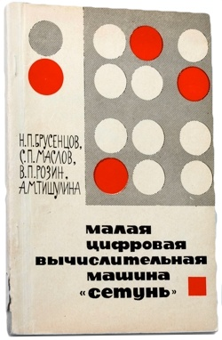
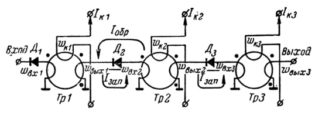
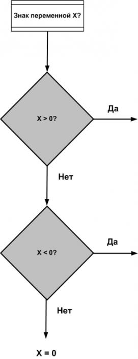
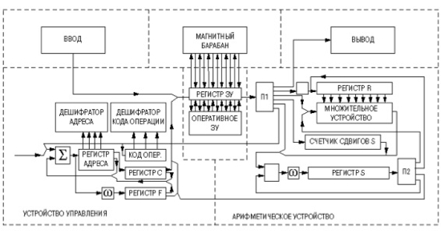
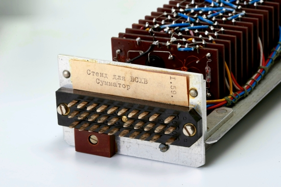
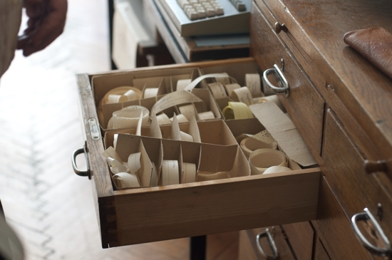
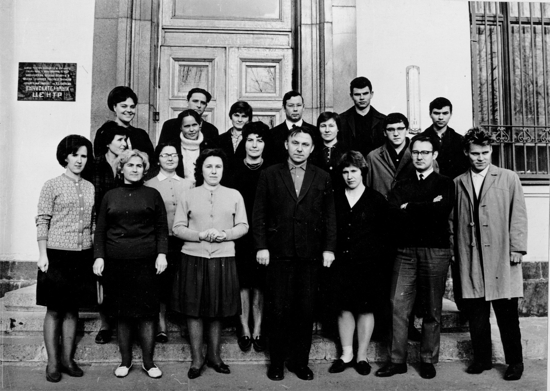
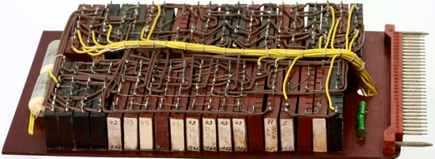
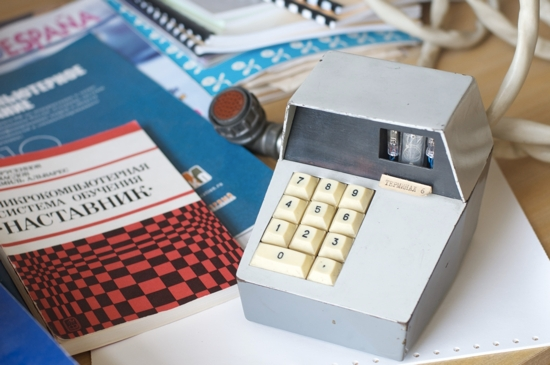
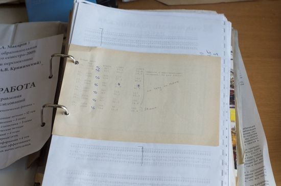

http://nnm.ru/blogs/gaal_dev/tertium-datur-drugie-kompyutery/
Евгений Лебеденко
Tertium datur: другие компьютеры
Полвека назад на эволюционном древе вычислительной техники появилась особая ветвь — ЭВМ, в основе которых лежала логика, отличающаяся от двоичной. Их разработали в МГУ.
"Наука умеет много гитик". Это высказывание как нельзя лучше подходит к истории разработки троичных компьютеров "Сетунь". Хотя бы потому, что, создавая их, разработчики смело шагнули с истоптанной веками дороги традиционной математической логики на малоизученные тропинки логики многозначной. Или потому, что советскому троичному компьютеру пришлось столкнуться со множеством препон и преодолеть их, постоянно доказывая свою жизнеспособность.
Один факт остаётся по-настоящему непреложным: в начале шестидесятых годов прошлого столетия на эволюционном древе вычислительной техники появилась особая ветвь — ЭВМ, в основе которой лежала логика, отличающаяся от бинарной.
Даже сегодня, спустя полвека с момента рождения троичного компьютера, ветвь эта выглядит эдаким вавиловским гибридом, несколько неуместным на фоне достижений двоичной электроники. Но это обманчивое впечатление. "Сетунь" — не тупиковое направление, а первый пробный шаг учёных и инженеров на пути преодоления несовершенств компьютеров, сделанных по "принципу исключённого третьего". И уже одно это — великий вклад в развитие вычислительной техники.
Появление ЭВМ "Сетунь"
Рассказывать историю разработки компьютера "Сетунь" легко и сложно одновременно. Легко, потому что у неё, как у большинства историй появления новых технологий, есть главный герой. Человек, который своим упорством и трудолюбием делает эти технологии возможными. Генератор идей, погрузившийся в проблему с головой.
 В истории ЭВМ "Сетунь" главный
герой — это Николай Петрович Брусенцов, главный конструктор троичного
компьютера.
В истории ЭВМ "Сетунь" главный
герой — это Николай Петрович Брусенцов, главный конструктор троичного
компьютера.
И именно это делает рассказ о появлении "Сетуни" сложным, поскольку промежуток от первоначального замысла до его воплощения в "железе" наполнен множеством разных людей и событий.
Началась история "Сетуни" в 1952 году, в специальном конструкторском бюро Московского государственного университета, куда по распределению попал выпускник МЭИ Николай Брусенцов. В теории бюро должно было совершенствовать техническое оснащение учебного процесса, на практике же оно зачастую решало совершенно другие задачи, выполняя заказы для сторонних НИИ и производств. Молодого инженера Брусенцова такое положение дел совершенно не радовало, поэтому он с энтузиазмом принял предложение заведующего кафедрой вычислительной математики механико-математического факультета МГУ академика Соболева участвовать в получении, установке и настройке вычислительной машины "М-2", разрабатываемой лабораторией электросистем его альма-матер под руководством Исаака Семёновича Брука. Сергей Львович Соболев прекрасно понимал перспективы применения цифровых ЭВМ в учебной и научной деятельности МГУ и изо всех сил способствовал появлению в университете собственного вычислительного центра.
Однокурсники Брусенцова, работавшие в лаборатории Брука, на всю жизнь "заразили" Николая Петровича цифровыми ЭВМ.
История, однако, по-своему распорядилась судьбой "М-2". Машина так и не попала в стены МГУ, несмотря на то что довольно активно использовалась его учёными. Всё потому, что в баталиях научных школ, зарождающейся тогда области вычислительной техники, академик Соболев поддержал направление высокопроизводительных компьютеров Сергея Алексеевича Лебедева, а не малых ЭВМ Брука.
Именно благодаря этому конфликту интересов Соболев принял решение о разработке в МГУ собственной малой ЭВМ, способной решать насущные вузовские проблемы.
Увлечённость Николая Брусенцова компьютерами помогла ему попасть в отдел электроники вычислительного центра МГУ, перед которым и была поставлена задача разработать новую ЭВМ. В поисках элементной базы, наиболее приемлемой по соотношению надёжности, производительности и цены, инженера Брусенцова откомандировали в лабораторию электромоделирования Льва Израильевича Гутенмахера при Институте точной механики и вычислительной техники Академии наук СССР, где в 1954 году была разработана безламповая ЭВМ "ЛЭМ-1". В качестве схемотехнической единицы "ЛЭМ-1" инженеры лаборатории Гутенмахера использовали трёхфазные феррит-диодные логические элементы — уникальную комбинацию запоминающих ячеек на базе ферритовых колец и полупроводниковых диодов. В этих логических элементах ферритовые кольца играли роль сердечников трансформатора и служили для хранения единиц и нолей — базовых компонентов двоичной логики, а диоды использовались в качестве вентилей в цепях связи между ними.
Типовым элементом "ЛЭМ-1" был феррит-диодный регистр сдвига, состоящий из трёх ферритовых колец: входного (записывающего), канального (считывающего, тактового) и выходного (связывающего регистр с последующими элементами).

Феррит-диодные логические элементы
Эта достаточно элегантная схема феррит-диодного регистра усложнялась за счёт включения в её состав дополнительных компенсирующих сердечников, устраняющих импульсы помехи в выходном ферритовом кольце. Вызванная неидеальностью петли гистерезиса ферритовых колец, эта помеха могла, при повышении рабочей температуры, достигнуть уровня сигнала.
Николаю Брусенцову было очевидно, что подобная схема далека от идеала. Поэтому он предложил её усовершенствовать, введя в цепь рабочих сердечников постоянное напряжение, которое запирало диод. Это решение исключало появление помехи, а значит, не требовало использования компенсирующих магнитных колец. Их теперь можно было применить в качестве второй пары рабочих сердечников, функционирующих встречно основной рабочей паре.
Вот так модернизация несовершенной элементной базы "ЛЭМ-1" способствовала появлению феррит-диодного логического элемента, который мог параллельно передавать две не совпадающие по времени последовательности сигналов — основу троичного кода.
Троичная логика против двоичной
Бинарная логика, являющаяся основой современной вычислительной техники, воспринимается сегодня как некая аксиома, истинность которой не подвергается сомнению. И действительно, кодирование информации с помощью наличия или отсутствия сигнала кажется самым подходящим способом реализации цифровых систем. Но так ли это?
Правила работы компьютеров определяют люди. Использование двоичной логики в вычислительном процессе — не закон природы, а сознательное решение, которое кто-то когда-то принял, потому что оно удовлетворяло разработчиков компьютеров, программистов и пользователей, решающих свои задачи.
Почему именно двоичная логика стала базой современных ЭВМ? Ответ представляется очевидным. Исторически математическая логика опиралась на идею "третьего не дано", сводя процесс логических умозаключений к бинарным решениям.
Эта догма классической логики обязана рождением принципу бивалентности логических суждений, введённому яростным стоиком Хризиппом и поддерживаемому авторитетом Аристотеля. "Фундаментом диалектики служит тезис, что всякое высказывание (то, что называют "аксиомой") или истинно, или ложно", — говорил Цицерон.
Простота бивалентности действительно неплохо описывает логические реалии жизни. Стоит вспомнить семафоры, пешеходные переходы и тумблеры "вкл-выкл". Бинарность неплохо управляет повседневностью.
Давайте взвесим на обычных рычажных весах два предмета А и В. Весы с лёгкостью позволят определить нам две противоположности: вес А > В и вес А < В. Но разве это всё? А как же А = В? Выходит, задача о весе А и В имеет три решения. Именно так.

Обычные рычажные весы могут отлично работать в качестве троичного логического элемента
Так же как третье решение имеет исход футбольного матча (ничья), нейтралитет Швейцарии (третья сторона) и неопределённое "может быть", полученное в ответ на конкретный вопрос.
Превратив рычажные весы в двоичный прибор, мы столкнёмся с неопределённостью A ≤ В, разрешить которую можно, только поменяв взвешиваемые А и В местами, то есть выполнив лишнюю операцию.

Установив фиксатор под одним из рычагов, весы можно превратить в бинарный логический элемент со всеми присущими ему недостатками.
Логику повседневной жизни сложно впихнуть в чёрно-белую картину бивалентности — это осознавали многие мыслители. В результате на свет появились неклассические логики, отказавшиеся от закона исключённого третьего. Один из первых вариантов многозначной логики в двадцатых годах прошлого столетия разработал польский учёный Ян Лукасевич. В его трёхзначной логике кроме полярных "да" и "нет" появилось значение "возможно". Трёхзначные логические высказывания Лукасевича допускали отсутствие непротиворечивости и назывались модальными. Помните консилиум в сказке о Буратино? "Пациент скорее жив, чем мёртв". "Скорее жив" и есть модальное логическое высказывание.
Автор приключений Алисы Льюис Кэрролл разработал трёхзначную алгебру, применив третью характеристику объекта — "несущественность" наряду с "существованием" и "несуществованием".
В вычислительной технике безупречность булевой алгебры начинает давать сбои при работе с отрицательными значениями. Ведь для представления отрицательного числа в бинарном виде нужно ввести дополнительный бит. То самое "третье", с помощью которого можно определить знак числа в двоичном коде. О том, что такое кодирование является нетрадиционным, говорит его даже название — дополнительный код. Получается, что для простоты реализации в ЭВМ операций для положительных и отрицательных чисел их разработчики сознательно отошли от двоичной логики в пользу того самого "исключенного третьего".
Двоичный алгоритм проверки знака переменной Х не оптимален, в то время как в троичном алгоритме проверка выполняется с помощью всего одной операции.
Ещё один недостаток двоичной логики — тот факт, что без дополнительных "костылей" в ней не реализовать основное логическое выражение — следование.
Попытка реализовать трёхзначность следования силами двузначной логики привела к тому, что это логическое выражение фактически подменили материальной импликацией. В вычислительных алгоритмах этот фокус сработал, а вот попытка реализации на компьютере вывода умозаключений провалилась. Подмена следования двузначной материальной импликацией ограничивает "интеллектуальность" ЭВМ. Человек с его способностью быстро перейти от двоичной логики к троичной, соглашаясь в нужный момент на "ничью", оказался намного гибче компьютера.
А что если логику компьютера изначально сделать троичной? Так рассуждал Николай Петрович Брусенцов, представляя осенью 1956 года на семинаре, посвящённом разработке МГУшной ЭВМ, магнитный усилитель с питанием импульсами тока — тот самый, модифицированный им феррит-диодный регистр. Его ключевой особенностью было формирование тройки значений: 1, 0 и -1 — идеальный вариант цифрового элемента, работающего с троичной логикой.
Николай Петрович Брусенцов рассказал в интервью "Компьютерре" о преимуществах троичной логики: "Люди настолько "околпачены" законом исключённого третьего, что не в состоянии понять, как всё обстоит на самом деле. На самом же деле двоичная логика совершенно не подходит даже для описания основного логического выражения — следования. При попытке описания в двоичной логике нормальной дизъюнктивной формы следования оно превращается либо в тождество, либо в пресловутую материальную импликацию.
Математик С.К. Клини и его книга "Математическая логика" в своё время оказали такое влияние на этот раздел математики, что сегодня практически ни в одном учебнике математической логики не найти отношения следования. Ссылаясь на Аристотеля, Клини заменил следование на материальную импликацию ("Два проще, а потому и полезней"). Логики, конечно, признают, что материальная импликация в постановке Клини — отношение, не имеющее смысла.
Дело в том, что все логики пытаются выразить отношение следования, используя закон исключённого третьего, а такого закона в природе нет, потому что отношение следования трёхзначное..."
"...Недостаток двоичной логики мы обнаружили, когда попытались научить компьютер делать умозаключения. Оказалось, что с использованием двузначной логики это невозможно. Люди, делая умозаключения, выходят из положения, убирая в нужный момент двоичную логику и используя отношение следования, а значит — трёхзначную логику".
Триты и трайты
Три вида сигналов, формируемые базовым элементом будущего троичного компьютера, его создатели назвали тритом. Если принять бит за меру количества информации, то информационная ёмкость трита будет равна примерно 1,5. А это значит, что при прочих равных условиях троичный компьютер обрабатывает в единицу времени больше информации, чем двоичный.
Минимальной адресуемой единицей памяти проектируемого троичного компьютера стал трайт, равный шести тритам и принимающий значения от -364 до 364. Работа с диапазоном отрицательных значений — особенность, отличающая трайт от двоичного байта, значения которого распространяются от 0 до 255.

Информационная ёмкость трайта такова, что с его помощью легко можно закодировать все заглавные и строчные символы русского и латинского алфавитов, математические и служебные символы.
Уникальная особенность троичного кода, применяемого в "Сетуни", связана с его симметричностью — распространением значений как в положительную, так и в отрицательную область. Благодаря симметричности в троичном компьютере отрицательные числа представлялись естественным путём — без хитроумных манипуляций с дополнительным кодом.
Уже одна эта особенность существенно упростила как систему команд "Сетуни", так и её архитектуру.

Блок-схема компьютера "Сетунь"
Набор команд "Сетуни" состоял всего из двадцати четырёх операций, три из которых были зарезервированы и никогда не использовались. Под код операции отводилось три трита. Шеститритовая адресная часть операции содержала: адрес, указание длины операнда и трит индексации (сложить, вычесть или не индексировать). Шесть тритов адреса позволяли адресовать сто шестьдесят два девятитритных слова, разбитых на три страницы памяти.
Реализация "Сетуни" в "железе" была весьма простой. Структурной единицей компьютера стала ячейка, представляющая собой феррит-диодный магнитный усилитель, собранный на гетинаксовой основе. Генератор тактовой частоты задавал такт работы ячеек в двести герц.

Сумматор
Ячейки компоновались в функциональные блоки: сумматоры, дешифраторы троичного кода, регистры сдвига. С помощью тридцатиконтактного разъёма каждый блок стыковался с другими блоками "Сетуни", формируя базовые компоненты ЭВМ: арифметическое устройство и устройство управления.

Память в "Сетуни", подобно современным гибридным системам хранения данных, была двухступенчатой: ферритовый куб ёмкостью в одну страницу постранично обменивался с традиционным для того времени запоминающим устройством — магнитным барабаном.

Программист и пользователь первого варианта "Сетуни" общался с ней с помощью рулонного телетайпа. Позднее для ввода данных стали применять фотоэлектрические перфоратор и считыватель с перфоленты, а для вывода — электроуправляемую печатную машинку.
"Нам видеть её и знать не надо"
По своим возможностям "Сетунь" относилась к малым ЭВМ. Иначе быть и не могло: троичный компьютер задумывался как университетская ЭВМ, обеспечивающая поддержку учебного процесса и научных изысканий вуза.
Однако простота и естественность работы с "Сетунью", обусловленная применением в ней троичной логики, снискала добрую славу. На варианте компьютера, установленном в вычислительном центре МГУ, решались экономические задачи, велись метеорологические расчёты, обрабатывались самые разнообразные статистические данные.
Попытка запустить массовое производство "Сетуни" не просто не увенчалась успехом, а чуть было не закончилась закрытием проекта. На тщательно сделанный и оттестированный образец "Сетуни", установленный на выставке научно-технических достижений вузов, высокое руководство не обратило никакого внимания.

Реализации первого варианта "Сетуни" (1958 год) и экземпляр,
демонстрировавшийся на ВДНХ в 1961 году
Более того, проект "Сетунь" попал под закрытие в рамках наведения порядка в разнообразном парке советских ЭВМ того времени. Один из членов государственного радиотехнического комитета (ГКРЭ), всеми уважаемый директор конструкторского бюро, отмахнулся от "Сетуни" фразой: "Нам видеть её и знать не надо. Покажите бумагу с с авторитетными подписями и печатями". Только благодаря вмешательству академика Соболева межведомственная комиссия ГКРЭ летом 1960 года провела тщательные недельные испытания троичного компьютера, в результате которых признала "Сетунь" "первым действующим образцом универсальной вычислительной машины на безламповых элементах, создание которой является определённым достижением в вычислительной технике". Ни больше ни меньше.
Серийное производство троичного компьютера навязали Казанскому заводу математических машин, хотя Брусенцов с командой разработчиков получал предложения от других производителей, в том числе и из-за рубежа.
Казанские инженеры, не вдохновлённые низкой стоимостью "Сетуни" (27 500 рублей), не горели желанием выпускать её серийные образцы в запланированные сроки. При том, что феррит-диодные усилители, базовые элементы троичного компьютера, поставляли в Казань с Астраханского завода электронной аппаратуры, они стоили всего три рубля пятьдесят копеек. Более того, своими "инженерными" изысканиями казанские производители так и норовили внести в отлаженную конструкцию троичного компьютера модификации, приводившие к его неработоспособности.
Бригада разработчиков "Сетуни" фактически поселилась на заводе, занимаясь постоянной отладкой серийных машин.

Дружный коллектив разработчиков "Сетуни"
Несмотря на все препоны, к 1965 году завод произвёл и реализовал пятьдесят экземпляров "Сетуни". Промышленные образцы компьютера заработали по всей стране — в военно-воздушной академии имени Жуковского и в одесском НИИ "Пищепромавтоматика", в якутском институте космофизических исследований и ведущих московских вузах.
И везде "Сетуни" зарекомендовали себя исключительно надёжными и простыми в освоении и эксплуатации машинами. Так, первый вариант "Сетуни", собранный для вычислительного центра МГУ, безотказно трудился более пятнадцати лет.
"Сетунь-70"
Идеи, заложенные в архитектуру первого троичного компьютера и реализованные в "Сетуни", оказались настолько удачными, что в 1967 году было принято решение выпустить её модифицированную версию.
Наряду с аппаратными улучшениями (увеличение объёма оперативной памяти, реализация системы прерываний, уменьшение потребляемой мощности и размеров ЭВМ), важнейшим нововведением стала реализация двухстековой архитектуры.
Выпущенный в 1970 году вариант обновлённого троичного компьютера получил название "Сетунь-70".


Стремление к реализации более продуманного и компактного представления программ привело разработчиков "Сетуни-70" к идее отказа от традиционного машинного кода и использования в качестве машинного языка обратной польской записи (ПОЛИЗ). Стандартные машинные команды, состоящие из кода операции и адреса операнда были заменены на трайты операций и операндов. Применение обратной польской записи и обусловило стековую архитектуру "Сетуни-70". В первом стеке адресные трайты управляют передачей данных из оперативной памяти в стек, а операционные трайты — преобразованием данных и возвращением результата из стека в оперативную память. При этом, как и положено при стековой обработке, эти операции выполняются над данными в вершине стека и нижележащими данными.
Пятьдесят четыре операции были реализованы аппаратно. Из них половина была операциями общего пользования, а оставшиеся двадцать семь были служебными и не могли выполняться в пользовательском режиме. Кроме аппаратных операций "Сетунь-70" поддерживала работу с двадцатью семью макрооперациями — подпрограммами, создаваемыми пользователем и по мере надобности вызываемыми из оперативной памяти. Для работы с макрооперациями использовался второй (системный) стек ЭВМ.
 Академик Соболев постоянно курировал проект троичного компьютера, используя
свой авторитет в случае бюрократических препон и проволочек
Академик Соболев постоянно курировал проект троичного компьютера, используя
свой авторитет в случае бюрократических препон и проволочек
Подобная реализация архитектуры "Сетуни-70" была неслучайной. Применение стеков и разработка операций в нотации ПОЛИЗ предполагали внедрение в процесс разработки программ идей структурированного программирования, концепция которого была предложена Эдсгером Дейкстрой. Структурированный подход существенно экономил время на разработку и отладку сложных программ, разбивая их на ряд структурных единиц, с каждой из которых можно было работать как с независимым объектом.
Специально для реализации этой идеи разрабатывалась среда ДССП (Диалоговая система структурированного программирования) — прообраз нынешних интегрированных сред программирования.
К сожалению, как следует обкатать идеи, реализованные в "Сетуни-70", не получилось. Очередная волна бюрократических зачисток, направленная на искоренение в вузах проектов разработки собственных ЭВМ, привела к тому, что "Сетунь-70" переселилась на чердак студенческого общежития в главном корпусе МГУ.
Возможно, её судьба была бы аналогична судьбе первой "Сетуни", варварски уничтоженной после многолетнего труда, если бы не научно-исследовательская работа "Разработка автоматизированной обучающей системы на базе малой цифровой машины".
Так "Сетунь-70" превратилась в электронного учителя и экзаменатора, а её ведущий системный программист Хосе Рамиль Альварес стал разработчиком программно-аппаратного комплекса "Наставник" — уникальной в своем роде обучающей среды.
Хосе Рамиль Альварес рассказывает: "После того как нашей лаборатории запретили заниматься компьютерами, профессор МВТУ имени Баумана Анисимов предложил Николаю Петровичу Брусенцову заняться применением компьютеров в обучении, чтобы, как он выразился, "никто не сказал, что мы этого не можем". Вот тогда Николай Петрович предложил мне перейти к нему для развития идей программированного обучения. До этого я занимался эмуляцией команд "Сетуни-70" на "Сетуни" для отладки макропрограмм системы ДССП.
С самого начала нашей работы Николай Петрович сказал, что "Наставник" не пойдёт в серию, как из-за дешевизны производства, так и из-за того, что система не позволяла халтурить ни ученику, ни преподавателю...
...Однажды к Николаю Петровичу пришёл академик Бахвалов и сказал, что ему необходимо ехать в командировку, а у него в это время должен быть коллоквиум по численным методам. Нельзя ли для его проведения использовать "Наставник"? Мы рассказали ему идею системы, Бахвалов сделал шаблоны заданий, и коллоквиум успешно прошёл. Позже, во время пересдачи тестов, мы с Бахваловым наблюдали, как один студент сел за тот же терминал "Наставника", что и в прошлый раз, думая, что ему попадутся те же самые вопросы. Я пояснил, что вопросы выбираются случайным образом. Бахвалов спросил, какой алгоритм используется в качестве генератора случайных чисел. "Всё очень просто, — ответил я, — алгоритм подсчитывает число нажатий на клавиши терминалов во всём дисплейном классе. А это всякий раз случайное число..."
В 1974 году компьютерный класс на базе "Сетуни-70" с подключёнными к ней двадцатью семью терминалами принял первых учеников — сто пятьдесят студентов, изучающих курс численного анализа. В дальнейшем был реализован курс обучения языку Фортран.

Терминал системы "Наставник"

Руководство по эксплуатации "Наставника"

Архивы результатов тестирования студентов
Программные и аппаратные решения "Наставника", успешно проверенные на базе "Сетуни-70", позволили позже реализовать эту обучающую среду на базе ЭВМ ДВК-2М. В таком модифицированном виде "Наставник" функционирует в МГУ до сих пор.
Есть ли шанс у троичной логики?
Конечно, разработку троичных компьютеров "Сетунь" можно считать случайным выбросом среди гладкого графика развития двоичной цифровой логики. Однако это слишком упрощённое представление.
Троичная логика находит всё более широкое применение в области телекоммуникаций. Нынешнее поколение высокоскоростных модемов вместо применяемого ранее двухчастотного способа передачи данных применяет трёхчастотный, полосу частот в котором формируют два троичных трёхчастотных генератора, которые за один такт способны передать девять кодов.
Кроме того, разработчики микропроцессорной техники всё чаще заглядываются на многозначные логики, в частности на их троичную реализацию. Такие компании, как IBM, Motorola и Texas Instruments, ведут исследования с кремниево-германиевыми сплавами (SiGe), в рамках которых можно реализовать цифровые интегральные схемы, работающие с тремя и более уровнями сигнала.
С позиций реализации компьютер с шестнадцатиразрядной шиной обеспечивает поддержку 216 (65536) адресов памяти, в то время как троичный компьютер аналогичной разрядности поддерживает 316 — около сорока трёх миллионов адресов. Есть над чем задуматься, учитывая более простую работу троичной логики с отрицательными значениями, что также существенно упростит архитектуру микропроцессоров.
Остаётся надеяться, что души "Сетуни" и "Сетуни-70" обретут троичное бессмертие не только в программных эмуляторах, но и в будущих поколениях компьютеров, которые не будут знать, что "третьего не дано".
Автор выражает признательность за помощь в подготовке материала фотографу Надиру Чанышеву, Юлии Сергеевне Владимировой — инженеру второй категории лоборатории электронных вычислительных машин факультета вычислительной математики Московского государственного университета, а также ресурсу "Троичная информатика".
29/12/2011
LIP 7 января, 17:20:
Как спец.в области еще советской телемеханики, сталкивался с элементами реализации систем ретрансляции и противоаварийной автоматики, реализованными на ЭВМ "Дон" и "Сетунь". Тогда, конечно, элементная база была очень несовершенной — но при всём при этом, к примеру, всю автоматику СЦБ целой железной дороги обслуживало всего 5 человек. После того, как перешли на ОС РАФОС и далее QNX и среду RealFlex и использования серверной Novell Netware — число персонала выросло до 25-30 человек, потом попробовали реализации на Windows CE и Windows XP Embedded — численность персонала еще увеличилась при катастрофическом снижении надежности единичных модулей RTU и систем исполнения.
Примеры из энергетики — системы телемеханики и противоаварийной автоматики имели 9 и 12-ти разрядные протоколы обмена, со знаком, и очень плохо эмулируемые при помощи двоичных микро-ЭВМ, так как использовались синхронные протоколы обмена и выделенные линии 2-4 проводной связи и специальные модемы, если надо было делить спектр. О стоимости и экономии траффика в то время вообще разговоров не возникало, основной критерий — это устойчивость, надежность и помехозащищенность. Вторая сторона вопроса, которая не афишировалась — это информационная безопасность. На 8-разрядных ЭВМ и контроллерах весьма сложно было "имитировать" UART таких систем (не хватало быстродействия) и "подделать" протокол серии, проиграв его "в линию" и вызвав сбой, а то и отказ,или аварийное отключение энергомощностей.
Протовоаварийная автоматика Братской и Усть-Илимской ГЭС, основанная на аппаратуре ТА-100, в свое время тоже проектировалась в ВНИИЭ и ЦНИИКА под рук. академика Гуревича с учетом возможного "третьего состояния", то есть троичной алгебры и на принципах мажоритарного декодирования и принятия решений "на выходе" — 2 из 3, 3 из 5, 5 из 9. Такая защита до сих пор успешно зарекомендовала себя и применяется на контурах больших котлов ТЭЦ, первичных и вторичных регуляторах контуров воды и жидкого натрия АЭС, на особо резервируемых ГЩУ и узлах связи. Так что такие разработки, как "Сетунь" и 9-12 разрядные системы телемеханики с разными типами свертки (полинома-CRC) в зависимости от заголовка и ССП кадра — они намного опередили свое время. Для школоты, которая начнет орать, что это избыточно или очень сложно, можно всё сейчас сделать на Delphi и VS, на Intel 80188 и 80486 и выше реализовать ВЕСЬ функционал старых стоек КП и ПУ — почитайте теорию сверточных кодов СПБгу издания или учебник Тутевича "телемеханика" 1978г издания.